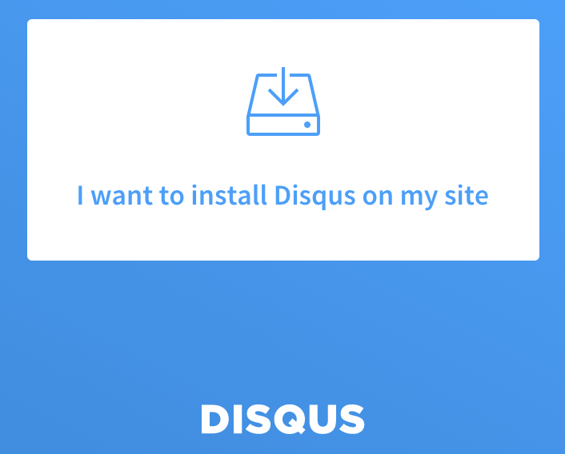
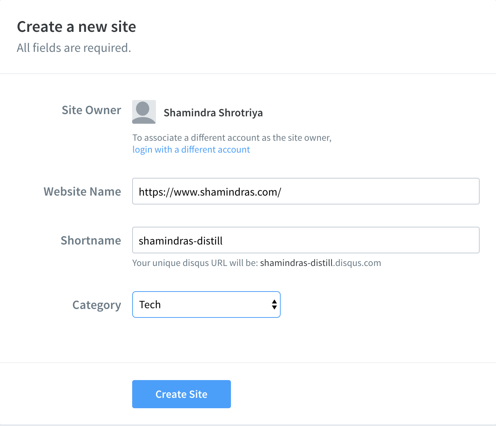
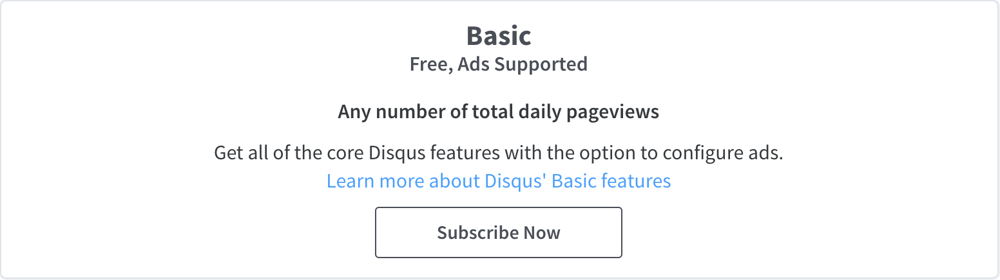
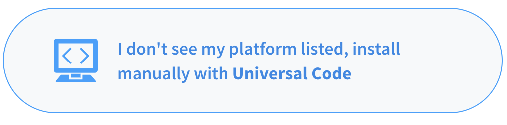
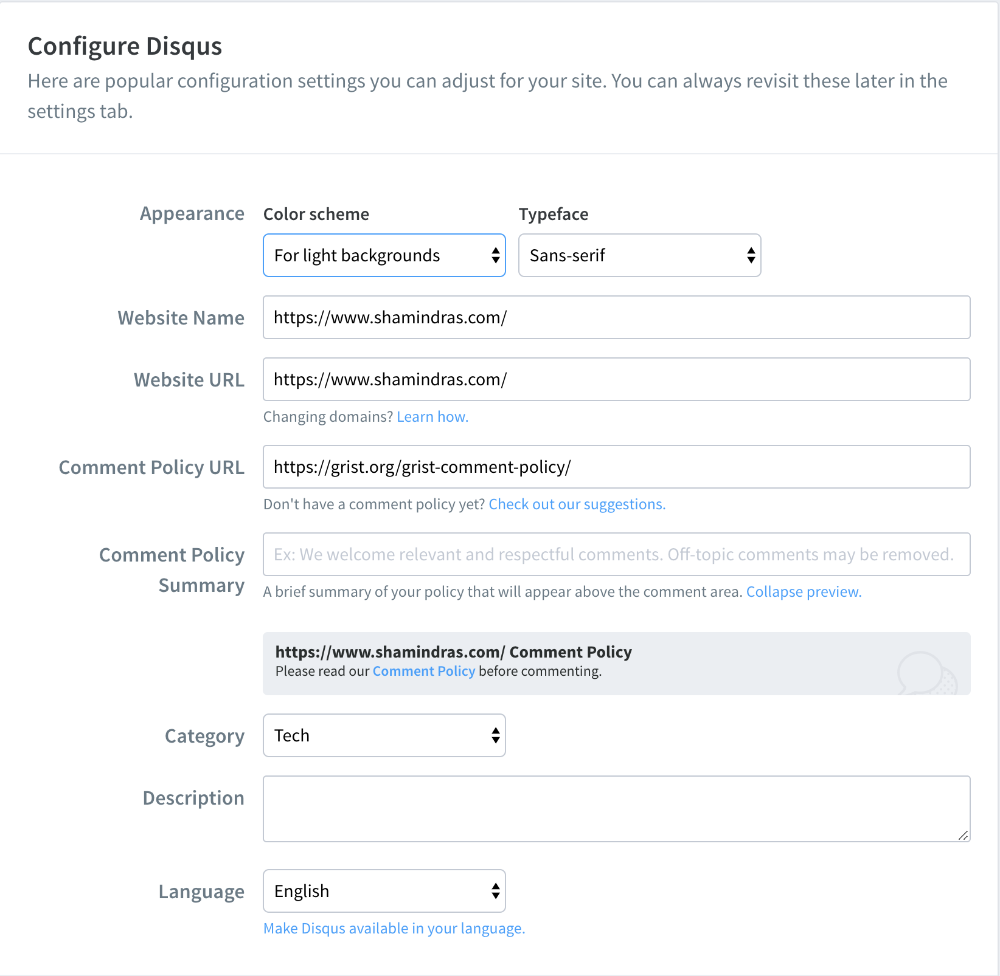
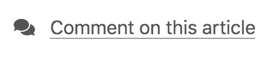
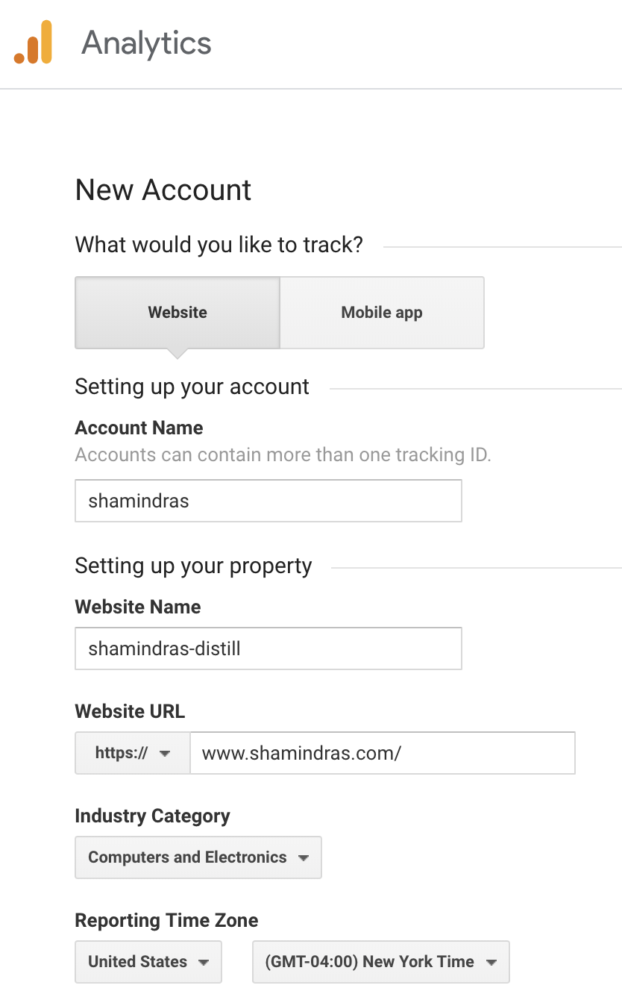
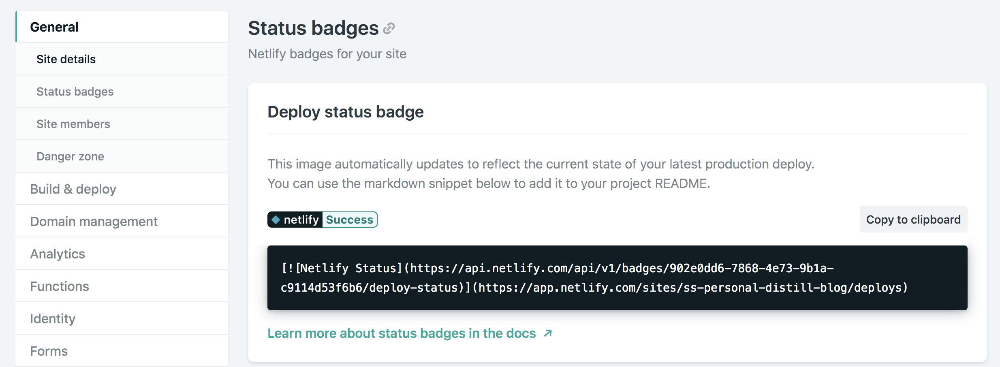
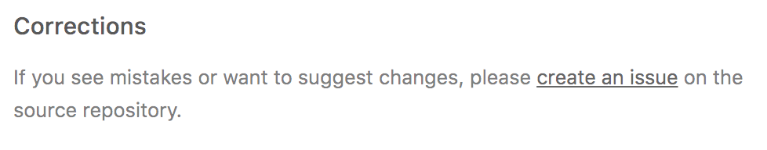

This post documents the original Distill-based blog setup and is preserved for historical reference. The blog now runs on Quarto, and comments use giscus instead of Disqus. See the GitHub repo for the updated Quarto source code.
Step 0: Introduction
This is a meta blogpost and a second-part in a series to describe how I setup this personal academic blog using the amazing distill package by the RStudio team.
The first part of this meta blogpost series can be found here, where I detailed the steps to setup this blog using Netlify and Google Domains. If you haven’t setup a distill themed blog then you are encouraged to check it out before reading this post.
Fortunately distill comes with easy to configure settings as well see below. I’ve only implemented some of the options available. I should note that the RStudio distill team has already created an excellent distill blog creation tutorial which I thoroughly used and highly recommend to new users to check out.
With that said, here are some key upgrades I made to this blog.
Step 1: Setup Disqus comments
I really wanted to setup some comments system for each blogpost. This way I can learn new tips from readers and find out how to improve posts going forward. I will go with the recommended Disqus comments option from the distill blog. I simply created a Disqus account and selected Get Started. I then clicked the following button to Install Disqus on my site.

I was then presented with the following Disqus site configuration menu. I entered https:://www.shamindras.com/ for my Website Name and manually set my Disqus shortname to be shamindras-distill to be easier to remember and specific to this site, in case I make more websites later on. This Disqus shortname is important to note down (r emo::ji("pen")) as we’ll see shortly.

After clicking Create Site in the previous menu I proceeded to select the free plan option by subscribing to the Basic, Free, Ads Supported comments option as seen below:

In terms of implementing Disqus on my site, I clicked on the following button to install Disqus on my site manually:

Before finishing the manual installation of Disqus I ensured that I set the following configuration options. I particularly like setting an opiononated comments policy and selected the Grist Comment Policy:

Finally to ensure that the implementation is completed I added the following line to the _site.yml post using the Disqus shortname set earlier i.e. shamindras-distill and ensuring hidden: true so that the comments are not expanded by default:
collections:
posts:
disqus:
shortname: shamindras-distill
hidden: trueWe now see the following comments option at the bottom of every post:

You can read more about setting up comments from the official distill blog here
Step 2: Setup Google Analytics tracking
I also wanted to setup basic user viewing tracking for my site. Fortunately distill can be easily configured to work with Google Analytics. In order to set this up I simply created an account for Google Analytics (using my personal gmail account). I then logged in and selected the option to track my website as follows:

Note that I specified the Website Name field to be shamindras-distill. This is indeed the same as the Disqus shortname from earlier but did not have to be. I just did it for consistency and easy reference. I was then given a Google Analytics token and concluded this setup by adding the token to the _site.yml file as follows:
google_analytics: "UA-145015693-1"You can read more about setting up Google Analytics from the official distill blog here
Step 3: Add Netlify Status Badge
Since Netlify is the web hosting platform for my site (see setup details here). I just logged into my Netlify account and went to my Site Details and obtained the following code from the Status Badges option.

I copy-pasted the above code in at the top of my site README.md file. This let’s me quickly know whether my website is up and running as expected by simply checking out my github page.
Step 4: Add blog post sharing options
It is easy to configure distill to allow for easy sharing of posts using a variety of social media platforms. I allow for twitter, linkedin, pinterest, and facebook. I did this by simply adding the following line in the _site.yml file:
collections:
posts:
share: [twitter, linkedin, pinterest, facebook]Now the following sharing options appear at the bottom of every post:
I also added in the following lines to _site.yml to ensure that twitter cards are correctly generated when posts are shared on twitter:
twitter:
site: "@shamindraas"
creator: "@shamindraas"Step 5: Add Corrections/Change Tracking and RSS feed
I frequently make edits to blogposts and intend to do so going forward. Fortunately distill makes it easy track changes/corrections made to blogposts. I did this by simply adding the site repo url to the _site.yml as follows:
repository_url: https://github.com/shamindras/ss_personal_distill_blogNow the following appears at the bottom of all blogposts:

So users can easily track changes or file any concerns as issues, though hopefully the Disqus comment feature makes this easier for everyone.
Finally it is easy to add an RSS feed for the blog by simply adding the following to _site.yml:
base_url: https://www.shamindras.com/
navbar:
left:
- icon: fa fa-rss
href: index.xmlThe critical elements are adding in the base_url fields and adding in fa fa-rss which is derived from the index.xml file. The index.xml file is automatically generated from the index.Rmd when you render the distill blog using the usual command:
rmarkdown::render_site(here::here())Next Steps
In terms of core distill blog settings, these are the main options that I’m happy to implement for now. For me the next steps are more about customizing my own blog workflow. This will involve setting up utilities to automatically:
- Wrap Rmd files to 80 characters for consistency
- Quickly delete unused files e.g.
DS_Storefiles on mac - Clear knitr cache for all posts and thoroughly re-render the site
I expect to do this using a combination of R functions/Makefile workflow, but do stay tuned!
Concluding Thoughts
As it can be seen it is quite easy to customize distill for commonly required features. Really great work by the RStudio team in making such customizations so user-friendly r emo::ji("thumbsup").
Reuse
Citation
@online{shrotriya2019,
author = {Shrotriya, Shamindra},
title = {Upgrading {Distill} {Blog} {Settings}},
date = {2019-07-31},
url = {https://www.shamindras.com/posts/2019-07-31-shrotriya2019distillpt2/},
langid = {en}
}